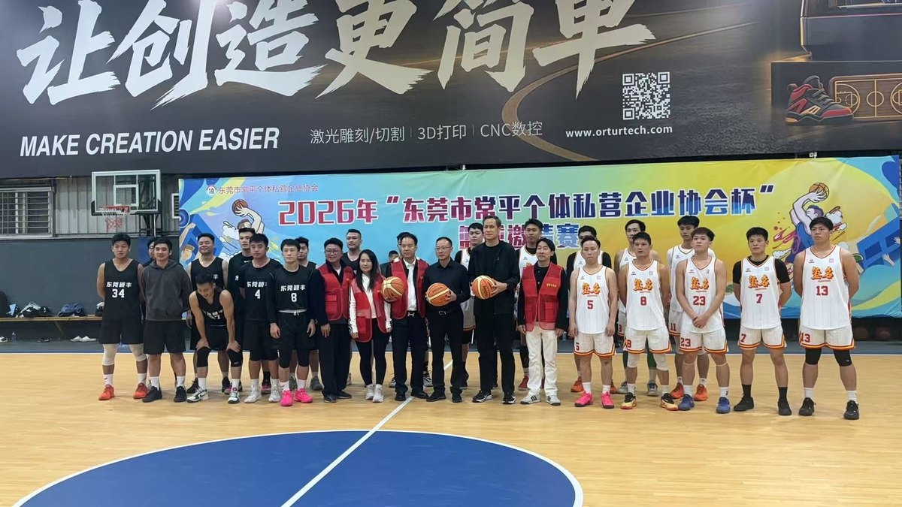
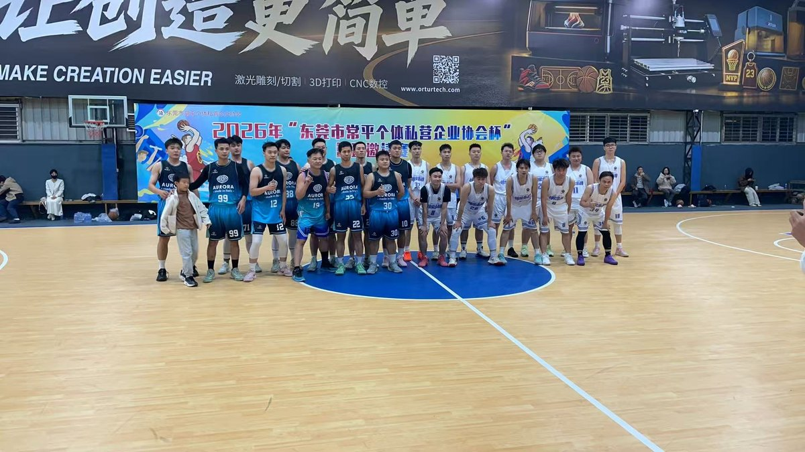
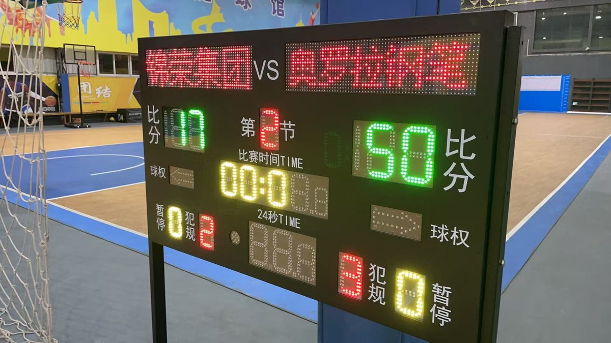
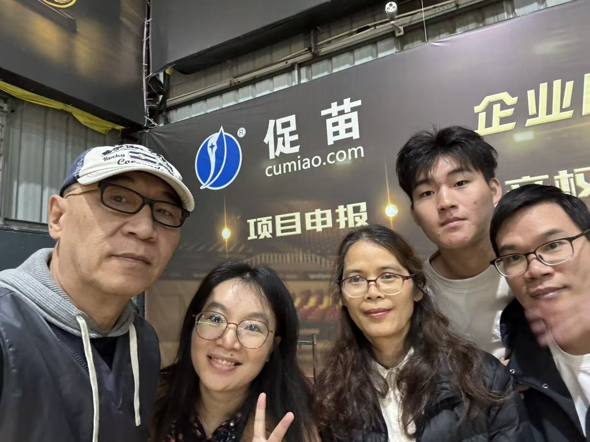
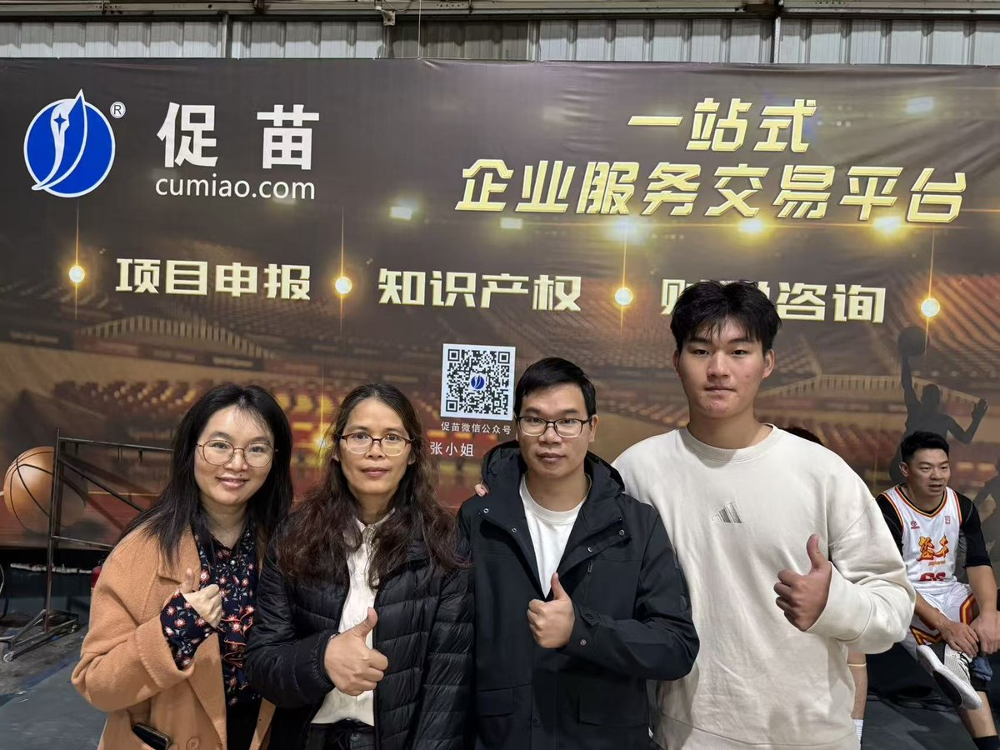

11月21日，2026年「东莞市常平个体私营企业协会杯」篮球邀请赛在常平举行。本次赛事由东莞市常平个体私营企业协会主办、莞促集团有限公司赞助，以篮球为纽带，为会员企业搭建交流互动、增进友谊的平台。这是协会首次以「协会杯」名义组织篮球邀请赛。
赛事启动仪式上，常平镇赵宁发副镇长跳球，为比赛开球。东莞市市场监督管理局常平分局常平市场监管分局杜遵凯副局长，东莞市常平个体私营企业协会会长谭喜、党支部书记李达豪、秘书长彭东正，莞促集团有限公司党支部委员孙晓君出席活动。





以球会友，凝聚会员力量
比赛现场，参赛队伍作风顽强、配合默契，攻防转换紧凑有序；场边会员相互交流，气氛热烈。电子记分牌实时显示比分与节次，记录着赛场上的每一次得分与防守。
协会对莞促集团有限公司的鼎力支持表示感谢。作为协会会长单位，莞促集团长期关注协会建设与会员服务，此次赞助篮球邀请赛，为活动的顺利开展提供了有力保障。
协会会长、莞促集团有限公司董事长谭喜表示，企业之间的交流不应只停留在会议室里，体育运动同样能够拉近彼此距离、凝聚团队力量。莞促集团扎根东莞多年，服务过众多本地企业，深知会员企业既需要专业服务支撑，也需要健康、开放、可持续的交流平台；支持协会举办篮球邀请赛，是希望以球会友，让会员企业在竞技互动中增强联系，共同营造团结向上、活力进取的氛围。
莞促集团有限公司成立于2017年，注册资本1亿元，总部位于东莞市厚街镇，是一家扎根东莞、服务粤港澳大湾区的企业服务与产业投资集团。集团从企业事务代理业务起步，现已形成企业总部管理与咨询、财税与工商服务、知识产权与科技项目申报、数字科技与大数据服务、产业投资与园区运营、教育与文旅六大业务板块，拥有9家控股子公司、19家成员与投资企业，为湾区企业提供全周期专业支持。
协会表示，将继续围绕服务会员企业的宗旨，组织更多形式多样、内容务实的交流活动，把政企联络、会员互助与企业文化建设结合起来，推动常平镇个体私营经济健康发展。